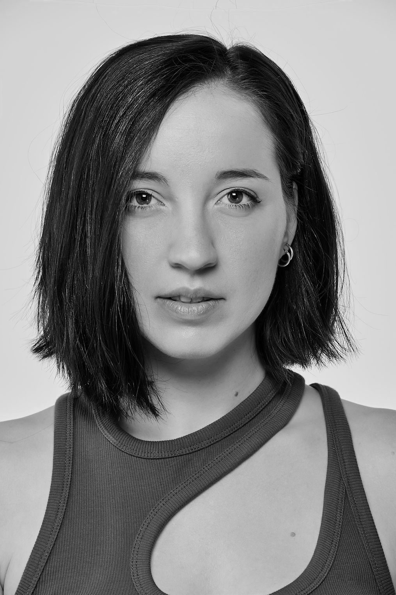
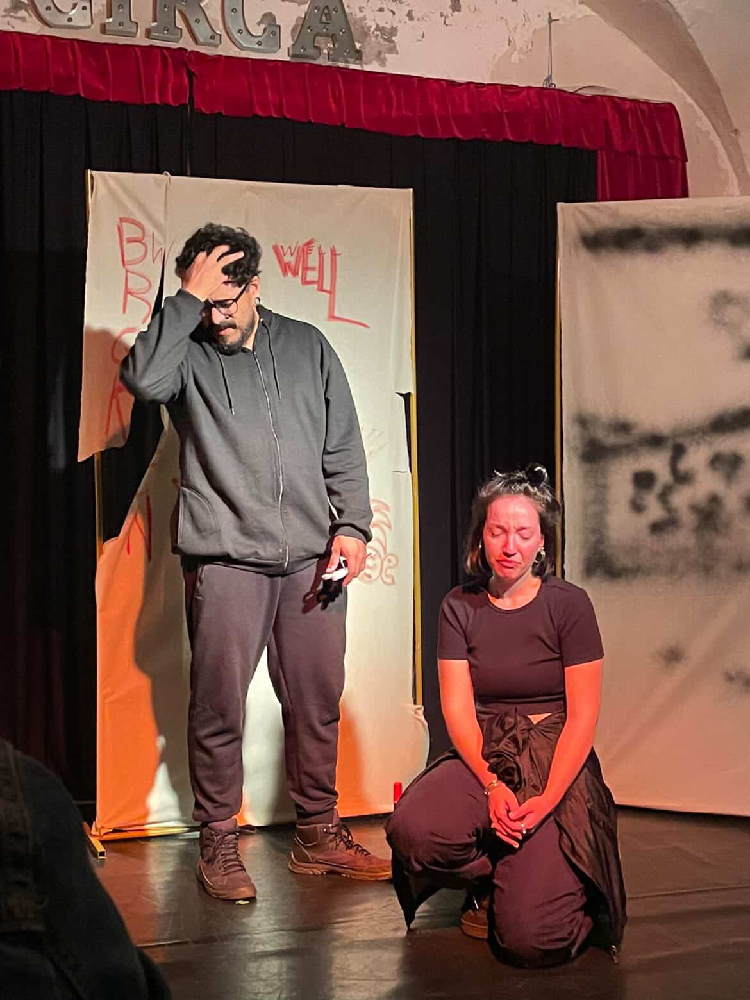

Um projeto da IMPRO.SP pra conectar ideias, técnicas e pessoas na comunidade nacional e internacional de improvisação teatral.
Em outubro e novembro, a escola viaja por cinco cidades com oficinas, espetáculos e aberturas de processo. Sempre em espaços independentes, sempre com artistas independentes, sempre com vontade e afeto.

Atenas, GréciaAtriz, improvisadora, diretora, musicista e professora. Propõe reflexões e técnicas que atravessam a tradição, a verdade, as emoções e a literatura.
Formada pelo Conservatório Helênico, pela Modern Times Drama School e pela LAMDA. Em 2018 fundou o grupo RCAB, que circulou por festivais internacionais. Criou e dirige formatos como Chorus, Through the Looking Glass, Worlds Apart e Eagerly Waiting, este último com Gabriel Caropreso.
É co-diretora artística do I.TH.A.C.A. Improv Festival, em Atenas, e professora da ImproSynthesis School of Improv. Dá aulas desde 2020 na Grécia, nos Estados Unidos, na Holanda, em Portugal e na Itália.
As oficinas são em inglês, com interpretação simultânea para o português feita por Gabriel Caropreso. Ninguém fica de fora por causa do idioma.

eagerly waiting, barcelona ↑